Mugiwaras, Los sombrero de paja

Monkey D. Luffy
Rol: Capitán
Fruta del Diablo: Gomu Gomu no Mi (lo convierte en hombre de goma)
Sueño: Ser el Rey de los Piratas encontrando el One Piece.
Personalidad: Alegre, inocente y de gran corazón. Aunque parece despreocupado, tiene un fuerte sentido de la justicia y nunca abandona a sus amigos.
Habilidad destacada: Gran resistencia física, creatividad en combate y un carisma que inspira a otros a seguirlo.

Roronoa Zoro
Rol: Espadachín
Arma: Tres espadas (Santoryu)
Sueño: Ser el mejor espadachín del mundo derrotando a Dracule Mihawk.
Personalidad: Serio, disciplinado y leal. Es el segundo al mando en la práctica, aunque también aporta humor por su mal sentido de la orientación.
Habilidad destacada: Fuerza sobrehumana, técnicas de espada devastadoras y gran resistencia al dolor.

Sanji
Rol: Cocinero
Estilo de combate: Black Leg (patea en lugar de usar manos, para protegerlas como cocinero)
Sueño: Encontrar el All Blue, mar legendario con todos los peces del mundo.
Personalidad: Galante, educado y a veces exageradamente romántico con las mujeres. Orgulloso de su cocina.
Habilidad destacada: Cocinero excepcional y luchador poderoso, con patadas devastadoras.

Jinbe
Rol: Timonel / Luchador
Estilo de combate: Karate Gyojin
Sueño: Ayudar a que humanos y hombres pez vivan en paz.
Personalidad: Sabio, calmado y honorable. Siempre actúa con gran sentido de justicia y responsabilidad.
Habilidad destacada: Gran dominio del agua en combate y fuerza sobrehumana propia de los hombres pez.

Nico Robin
Rol: Arqueóloga
Fruta del Diablo: Hana Hana no Mi (puede hacer brotar partes de su cuerpo en cualquier superficie)
Sueño: Descubrir la Verdadera Historia del mundo leyendo los Poneglyphs.
Personalidad: Seria, culta y misteriosa. Tiene un pasado trágico que la hizo desconfiada, pero encuentra en la tripulación su familia.
Habilidad destacada: Conocimiento único sobre historia antigua y técnicas de combate usando sus clones de extremidades.

Nami
Rol: Navegante
Arma: Clima-Tact (manipula el clima)
Sueño: Dibujar un mapa completo del mundo.
Personalidad: Inteligente, astuta y en ocasiones avara. Sin embargo, es profundamente leal a sus amigos.
Habilidad destacada: Genio en la navegación, capaz de leer el clima y guiar al barco en mares imposibles.

Brook
Rol: Músico / Espadachín
Fruta del Diablo: Yomi Yomi no Mi (le permitió revivir tras morir)
Sueño: Reencontrarse con Laboon, una ballena amiga.
Personalidad: Alegre, bromista y amante de la música. Hace chistes de huesos constantemente.
Habilidad destacada: Espadachín ágil, con técnicas ligadas a la música. También puede usar el poder de su alma.

Tony Tony Chopper
Rol: Médico
Fruta del Diablo: Hito Hito no Mi (le da forma humana a un reno)
Sueño: Curar cualquier enfermedad.
Personalidad: Inocente, bondadoso y algo infantil. Se emociona fácilmente cuando lo elogian.
Habilidad destacada: Gracias a sus Rumble Balls, puede transformarse en diferentes formas, adaptándose al combate.

Franky
Rol: Carpintero
Sueño: Crear un barco capaz de dar la vuelta al mundo.
Personalidad: Excéntrico, ruidoso y emocional. Aunque parece duro, es muy sensible.
Habilidad destacada: Es un cyborg con un cuerpo modificado lleno de armas y funciones. Construyó el Thousand Sunny, el barco actual de la tripulación.

Usopp
Rol: Tirador / Inventor
Arma: Tirachinas Kabuto y gadgets propios
Sueño: Ser un valiente guerrero del mar, como su padre.
Personalidad: Cobarde por naturaleza, pero con gran ingenio y un enorme corazón. Crece mucho a lo largo de la historia.
Habilidad destacada: Precisión increíble como francotirador e ingenio para crear armas y trampas.
🦹♂️ Villanos Principales
En One Piece hay muchos antagonistas, algunos villanos momentáneos y otros que son ejes de la historia.
Arlong y los Piratas Gyojin
Primer gran villano de Nami. Arlong dominaba su isla natal con brutalidad.
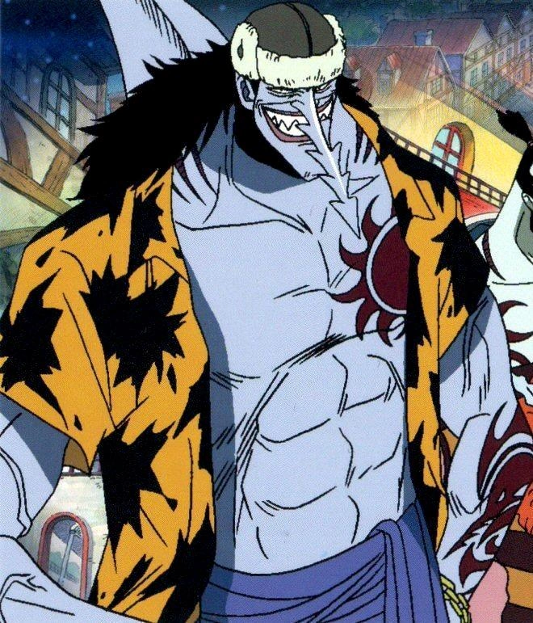Crocodile (Mr. 0)
Ex-Shichibukai, líder de Baroque Works, buscaba controlar Arabasta.
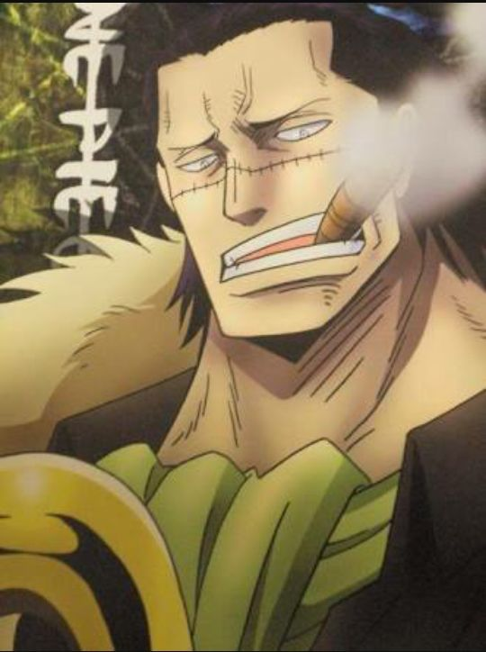Enel
"Dios" de Skypiea, con el poder de la electricidad (Goro Goro no Mi). Creía ser invencible.
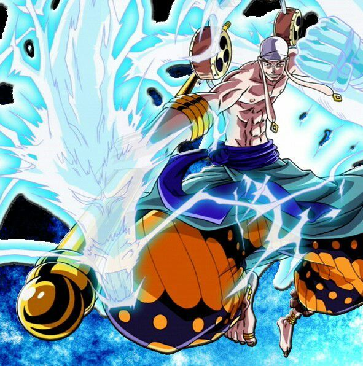Rob Lucci y CP9
Organización secreta del Gobierno Mundial. En Enies Lobby fueron enemigos centrales.

Gecko Moria
Ex-Shichibukai, líder en Thriller Bark. Controlaba sombras con su fruta.
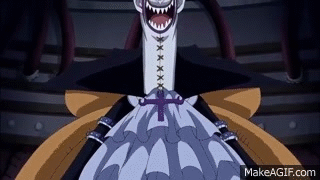Donquixote Doflamingo
Shichibukai y rey de Dressrosa. Manipulador, cruel y usuario de la Ito Ito no Mi (hilos).

Kaido
Uno de los Cuatro Emperadores. "La criatura más fuerte del mundo", líder de los Piratas de las Bestias.
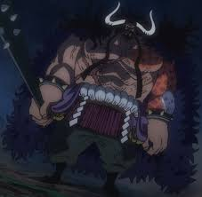Big Mom (Charlotte Linlin)
Emperatriz del Mar, líder de los Piratas de Big Mom, con una enorme familia de hijos piratas.

Marshall D. Teach (Barbanegra)
Antiguo subordinado de Barbablanca, traicionero, ambicioso y actual Emperador. Es el único con dos frutas del diablo.
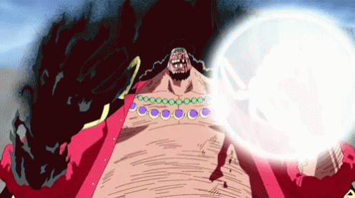⚓ La Marina (Navy)
Es la organización militar más fuerte del Gobierno Mundial. Su objetivo es mantener el "orden" en los mares, aunque muchas veces su justicia es cuestionable.
Sengoku
Ex-Almirante de Flota. Dirigió la Marina durante la Guerra de Marineford.

Akainu (Sakazuki)
Actual Almirante de Flota. Su filosofía es la "justicia absoluta". Extremadamente duro y despiadado.
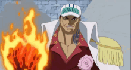Aokiji (Kuzan)
Ex-Almirante, usuario del hielo. Más compasivo que otros marinos, dejó la organización tras diferencias con Akainu.
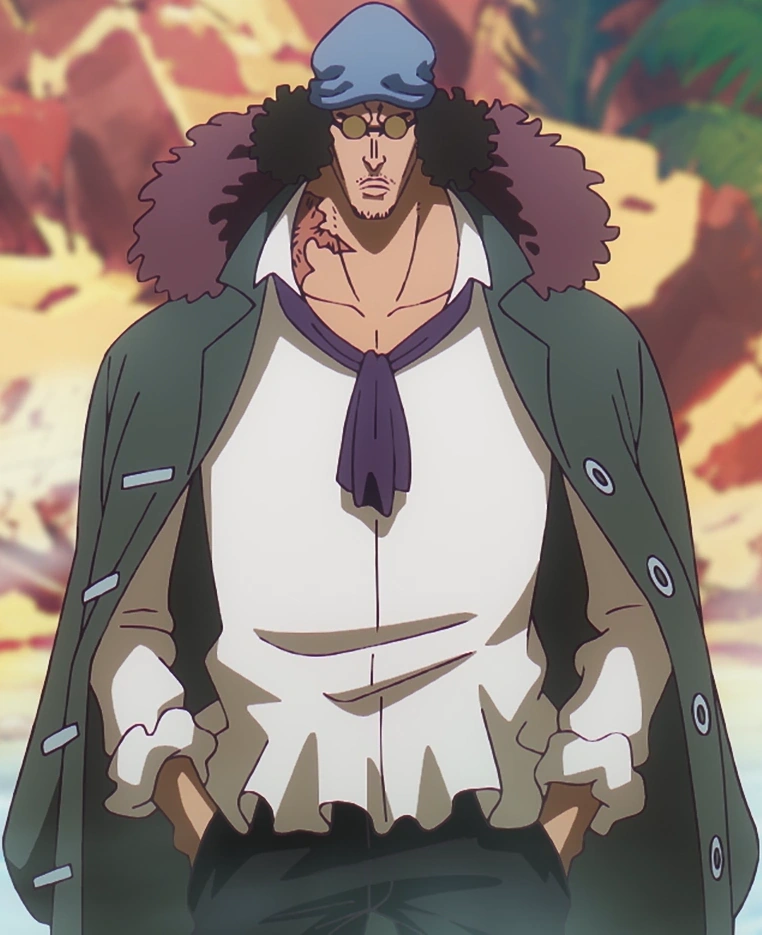Kizaru (Borsalino)
Almirante que usa la velocidad y poder de la luz. Relajado, pero letal.
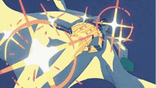Smoker
Vicealmirante, enemigo recurrente pero con cierto respeto hacia Luffy. Usa la fruta Moku Moku (humo).
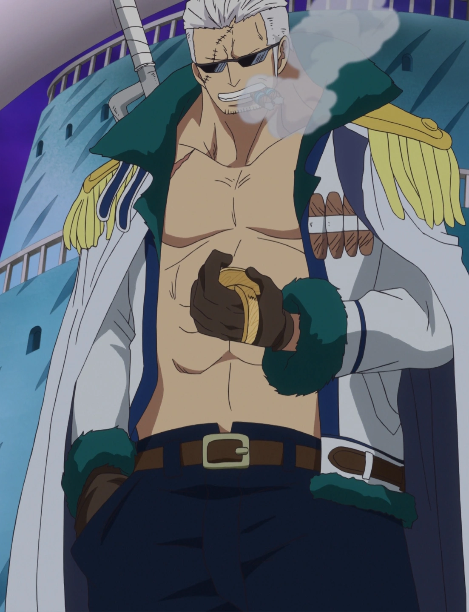Garp
Vicealmirante, abuelo de Luffy y Ace. Conocido como el "Héroe de la Marina", aunque rechaza ascender para no quedar bajo el control total del Gobierno Mundial.

Fujitora (Issho)
Almirante de la Marina. Usuario de la Zushi Zushi no Mi (gravedad), de carácter justo.
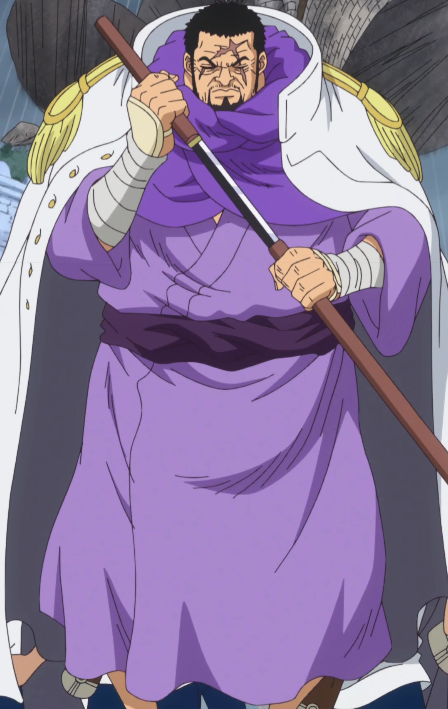Coby
Capitán de la Marina en el Nuevo Mundo. Admirador de la justicia, aliado ocasional de Luffy.
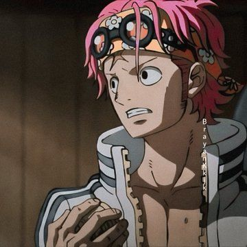☠️ Principales Compañías Pirata
Piratas del Pelirrojo
Liderados por Shanks, uno de los Cuatro Emperadores. Respetados y temidos por su fuerza.

Piratas de Barbablanca
Liderados por Edward Newgate (Barbablanca). Una de las tripulaciones más poderosas, con un fuerte sentido de familia.

Piratas de Barbanegra
Liderados por Marshall D. Teach, que ascendió rápidamente a la posición de Emperador. Extremadamente peligrosos.

Piratas de Big Mom
Familia numerosa de Charlotte Linlin, con decenas de hijos e hijas que ocupan cargos dentro de la tripulación.

Piratas de las Bestias
Liderados por Kaido, con un ejército de usuarios de frutas artificiales (Smile). Buscaban dominar el Nuevo Mundo.

Piratas de Heart (Corazón)
Capitán: Trafalgar D. Law, un Supernova aliado de Luffy en varias sagas. Estratega y usuario de la Ope Ope no Mi.
.jpg)
Piratas de Buggy
Inicialmente débiles, Buggy llegó a ser reconocido como líder de una organización de mercenarios.

Piratas de Kidd
Capitán Eustass Kid, rival de Luffy, también busca el One Piece.

🔥 Ejército Revolucionario
Es la mayor fuerza opositora al Gobierno Mundial, con el objetivo de derrocarlo.
Monkey D. Dragon
Líder y padre de Luffy. Es considerado el criminal más buscado del mundo.

Sabo
Hermano jurado de Luffy y Ace, actual Jefe de Estado Mayor del ejército. Usuario de la Mera Mera no Mi.
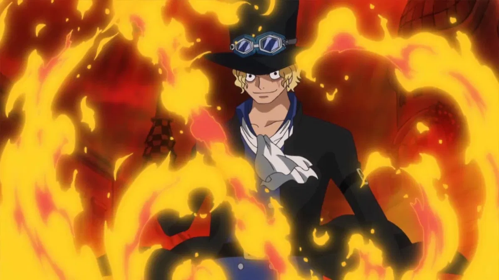Ivankov
Comandante del Reino Kamabakka, con la fruta Horm-Horm que altera cuerpos y hormonas.
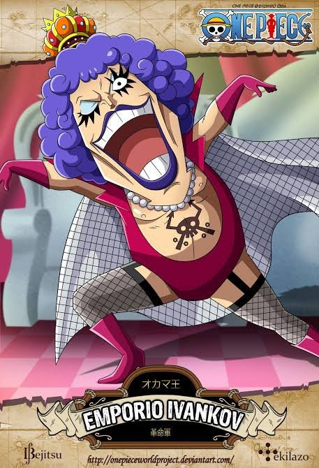Bartholomew Kuma
Ex-pirata convertido en Shichibukai y luego en arma del Gobierno. Miembro clave infiltrado del Ejército.
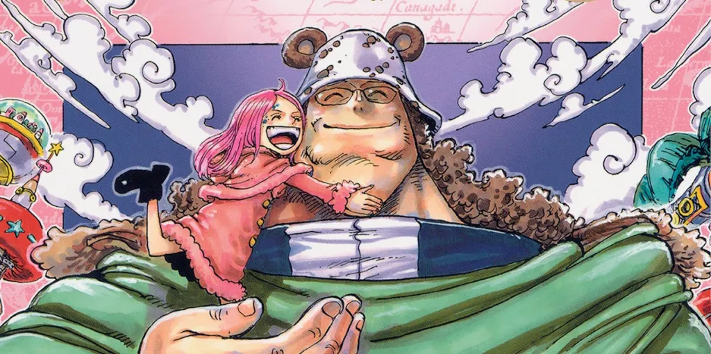Comandantes del Ejército
Entre ellos Karasu (controla cuervos), Morley (gigante que controla el suelo), Lindbergh (tecnólogo mink).